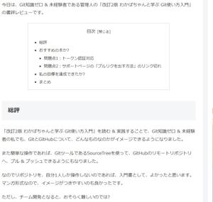
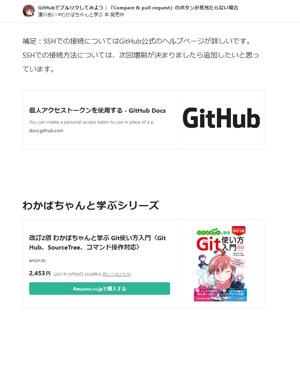

うるがいの話 ある日
最新: Ｗｉｎｄｏｗｓ１１への移行作業【うるがいの話 ある日】とは 一日だけのプログです
『うるがいの話』の最新一日だけのプログで、通信料が少なく経済的だ。カニの画像をクリックすると全ての日付が載る『うるがいの話』サイトを表示します
|
|
【うるがいの話】 うるがい(ｳﾙｶﾞｲ urugai)とは、『もずくがに』の名前でとても大きくなります。 |
|---|---|
|
|
【カミマヤーの話】 猫のことを方言でマヤーといいます。カミマヤー（kamimayaa）とは、神の猫のことです。 |
|
【たながぁの音楽】 たながぁ（ﾀﾅｶﾞｰ tanagaa）とは手長えびのことで、何種類かあり大きいのは車 エビぐらいになります。 |

|
【ぶながぁの話】 ぶながぁ(ﾌﾞﾅｶﾞｰ bunagaa)とは、赤い髪の毛、赤い身体、そして身長は１ｍ２０ｃｍ ぐらい、川の蟹を食べているの目撃された。場所は沖縄県国頭郡大宜味村のと ある村僕の隣近所に住んでいる爺さんから、聞いた話です。 |
|
|
【ギーマの話】 ギーマ(giima)とは、山原の里山に咲くスズランに似た、 花を付けます。実は食べられます、 気が付くと口の周りが紫になっています。 |
2022年08月29日 (月）Ｗｉｎｄｏｗｓ１１への移行作業
16:24
 
ウェブサイトの運用を、Ｗｉｎｄｏｗｓ１０であるＰＣ１号で行っている。８
月６日から、Ｗｉｎｄｏｗｓ１１のＰＣ３号でも代替できるよう環境整備を行
ってきた。そして昨日８月２８日（２０日間）にやっと目途がたち、作業を終
える。運用の切替は、未定だ。チンタラ作業をしたが、それなりに難儀した。
レジスタまでいじる羽目になろうとは、その筋の人でないと。アマゾンで購入
した「改訂２版わかばちゃんと学ぶＧｉｔ使い方入門」の本も取り出しで見る
が、残念ながら トークン認証対応が記載されていない ので買った意味が無か
った事を改めて感じる。ところでわかばちゃん会社を辞めていないのだろうか
フと心配になってネットを調べるとまだ頑張っているようだ。改訂２版に対す
る問い合わせもあるのだろうか、 増版で対応します とある。増版するのはい
つだろうかだろうか、増版してももう買わないけど。
台風１１が、沖縄本島に本当（クっクっ）に来るか、注視しよう。
１６時１６分 ビットコインの総資産 ￥７、９７８↓